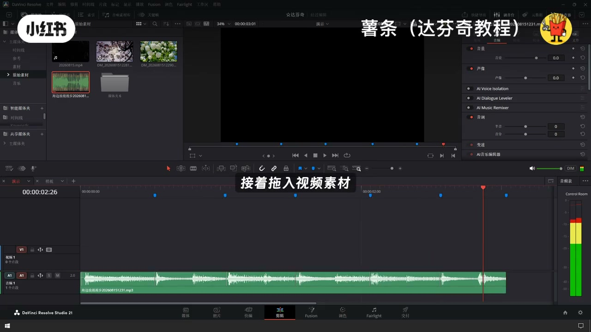
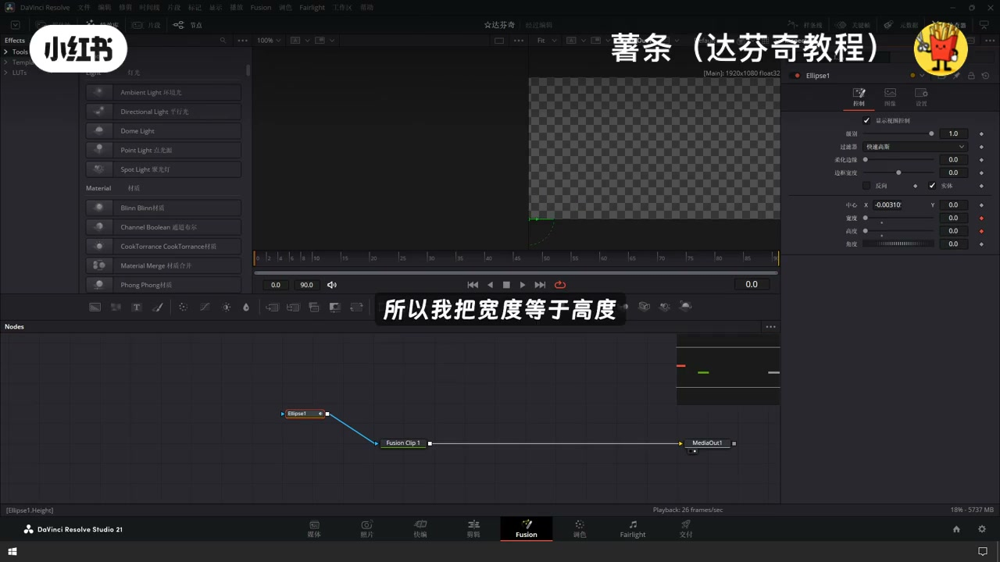
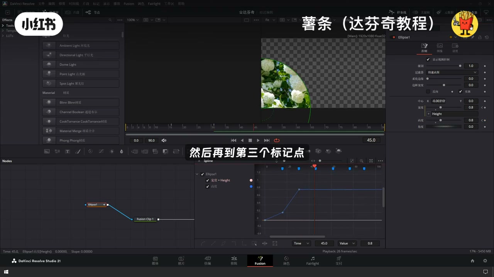
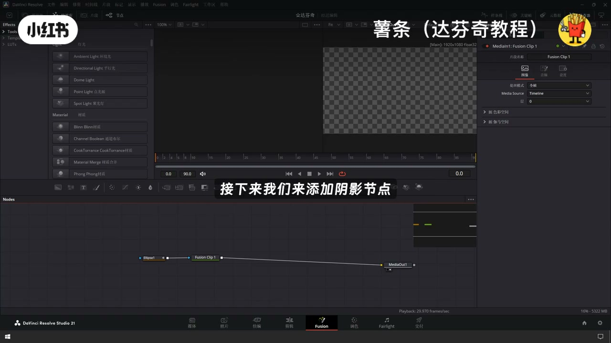
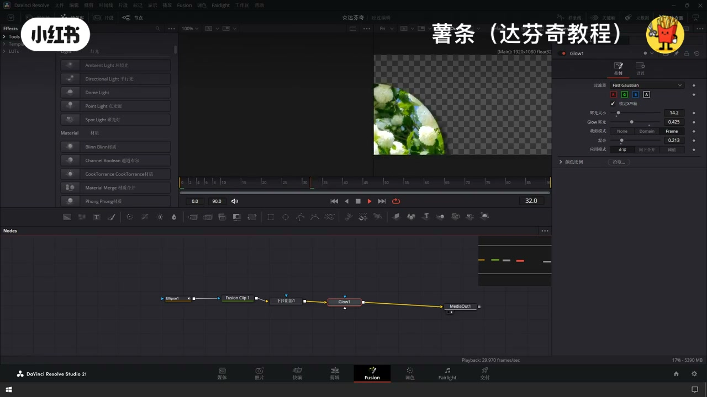
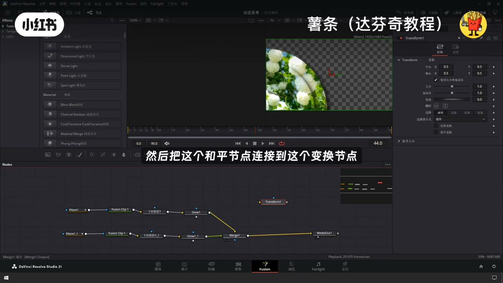
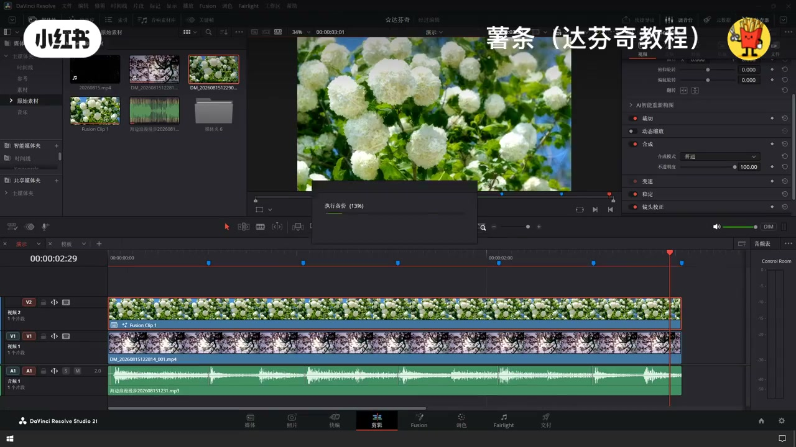

内容要点
「达芬奇水波滑动转场开场制作动画教程」教程要点：今天教大家如何在达芬奇里面制作出水波滑动的效果 → 先把音频拖动到时间线上 → 删除多余的音频轨道 → 然后右键音频显示音乐协拍…
知识结构
今天教大家如何在达芬奇里面制作出水波滑动的效果
这样我们就是一个慢快慢
也就是圆形版的节点
- 0.2
- 0.8
- 0.6
- 0.8
- 0.4
- 0.6
今天教大家如何在达芬奇里面制作出水波滑动的效果
00:00–01:41今天教大家如何在达芬奇里面制作出水波滑动的效果
今天教大家如何在达芬奇里面制作出水波滑动的效果；先把音频拖动到时间线上；删除多余的音频轨道；然后右键音频显示音乐协拍；接着对音频轨道进行标记；接着拖露视频素材；分别放置在V1 V2轨道上；采取掉多余的部分；选中V2轨道上面的视频素材；音键Fish片段；在右键在Fish页面中打开；拖露一个圆形遮盗；然后连接到节点上；打开右上角的检查器；让这个圆形遮罩的中心点位置移动到左下角；然后将宽度跟高度；先切换到第一帧；然后把宽度跟高度都改成0；打成关键帧；然后因为我们这是一个圆；所以我把宽度等于高度；等于；剪接到高度；这样他们两个就绑定到一块了；接着我们打开样条线；地零帧我们已经打上了关键帧；然后我们到下一个标标记点；然后调整我们这个；圆形遮罩的大小；给它改成0.2；然后再到下一个标记点；给它调整0.8；然后再到第三个标记点；给它改成1


01:40–03:22这样我们就是一个慢快慢
这样我们就是一个慢快慢；的一个缩放的动画；我们继续给它进行调整；再1.6；再加1.8；这个是2.4；刚好把画面填满；我们关掉样条线；看一下效果是什么样的；这样子初步的一个效果就已经完成了；接下来我们来添加阴影节点；跟飞光节点；Shift加空格；输入下拉阴影；直接到圆形版；调节一下阴影的参数；接下来添加辉光节点；也是Shift加空格；DLOW；调整辉光节点的参数；这样子我们第一层的效果就制作好了；我们全部选中；Condra加C加Condra加V；再复制出来；然后把这两个节点合并在一起；黄色是背景节点；绿色是前景节点；我们现在调整前景节点；把前景节点；多小一点；我们回到前景节点；我们把前景节点调整到前景节点；多小一点；我们回到前景节点的第一个节点


03:22–05:09也就是圆形版的节点
也就是圆形版的节点；调掉低帧；我们再往下；0.2；这个高度改成0.1；第一背景节点稍微小一点；再往下面；0.8；0.6；0.8；0.4；0.6；都要比背景节点要小个0.2；这样子我们的从左下角渐变出来的效果就有了；但是我们右上角也要做个一样的动作；来对应；对应这个我们只需要一个节点就可以完成；我们添加一个变换节点；然后把这个合并节点连接到这个变换节点；然后再来一个合并节点；然后我们调整这个变换节点；给它镜像翻转；这样子右上角也就出来了一个一模一样的动作；我希望它是左下角这个盖着右上角；让我们把前景跟背景切换一下；快捷一些是Counter加T；好了这样就是左边盖着右边；然后我们切换到剪辑面板；少了一个雨滴的效果；我们拖入一个雨滴的叠加素材；然后我们在检查器合并这里；把这个普通改成绿色



口述/画面要点（40段）
结合 Whisper medium 与画面大字整理；专有名词已校对。
今天教大家如何在达芬奇里面制作出水波滑动的效果
先把音频拖动到时间线上
删除多余的音频轨道
然后右键音频显示音乐协拍
接着对音频轨道进行标记
接着拖露视频素材
分别放置在V1 V2轨道上
采取掉多余的部分
选中V2轨道上面的视频素材
音键Fish片段
在右键在Fish页面中打开
拖露一个圆形遮盗
然后连接到节点上
打开右上角的检查器
让这个圆形遮罩的中心点位置移动到左下角
然后将宽度跟高度
先切换到第一帧
然后把宽度跟高度都改成0
打成关键帧
然后因为我们这是一个圆
所以我把宽度等于高度
等于
剪接到高度
这样他们两个就绑定到一块了
接着我们打开样条线
地零帧我们已经打上了关键帧
然后我们到下一个标标记点
然后调整我们这个
圆形遮罩的大小
给它改成0.2
然后再到下一个标记点
给它调整0.8
然后再到第三个标记点
给它改成1
这样我们就是一个慢快慢
的一个缩放的动画
我们继续给它进行调整
再1.6
再加1.8
这个是2.4